| Kolable 只用結帳 | 後台 54 項功能中，募資專案、贈品方案、作品專案、音頻廣播、電子商務等模組七年來全無資料或僅有測試資料。實際有使用行為的是訂單管理、藍新金流（6 商店）、發票、會員與產品目錄，以及使用最重的預約課程（Mandarin Lounge、Topic class，1,643 個方案）。換言之，一套通用型 SaaS 系統七年下來被 TLI 用成了一套結帳與預約工具，其餘功能是閒置成本，學生前台體驗也不佳。 |
| 學生端體驗差 | 1.0 的學生前台是通用 SaaS 版型，把課程、活動、專案、廣播並列成同一層目錄，學員要買一個語言方案得先理解平台的分類邏輯，而不是「先選學習方式、再選方案、最後排時間」的自然路徑。現況要先註冊才看得到課程內容，招生轉換斷在註冊那一步。 |
| 顧問要在多套系統間切換 | 1.0 沒有顧問工作台。現場人員建訂單要在會員、產品、訂單、發票四個模組之間切換，查課時與課表還要另外進 Park，等於一次建訂單橫跨五套系統／模組，是「現場人員不想使用」的根源。 |
| Zendesk 不接單 | 各渠道（官網、Line、FB、IG、Email）已整合至 Zendesk；但 Zendesk 僅承接諮詢、無法接單，顧客從諮詢到下單中間仍要人工轉接。一階段（1-1）由 AI＋真人文字客服平台直接取代。 |
| Park 已多年未更新 | Park 的系統分析文件寫於 2018 年，資料模型有 106 個實體，設計前提是「線上一對一課程平台」，與 TLI 現在四校實體加線上的混合經營型態已經不同；文件此後未見更新紀錄，形同已無原廠持續支援。排課、請假補課、時數薪資等核心教務作業仍靠 Park 加 Line 加紙本加 Excel 拼湊完成。 |
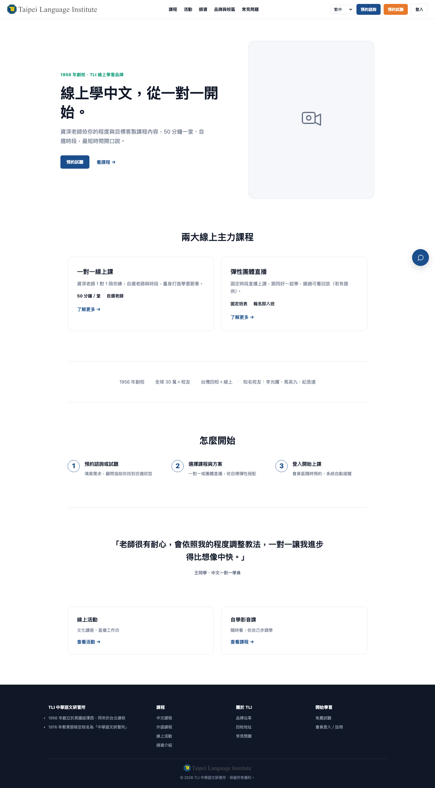
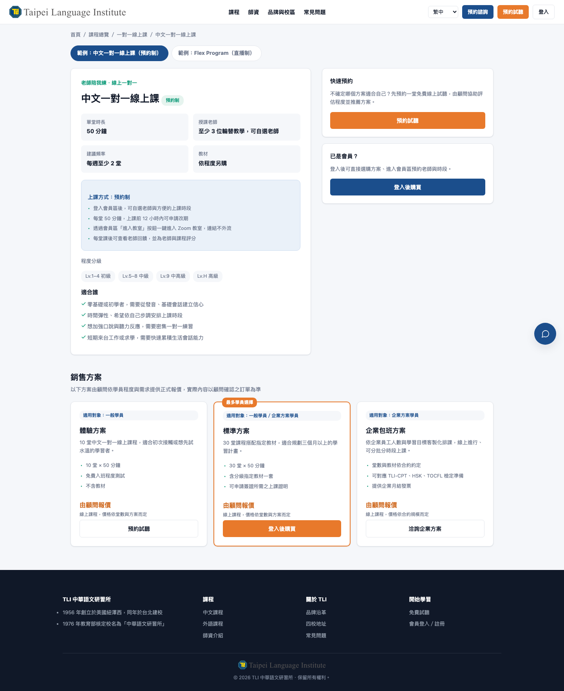
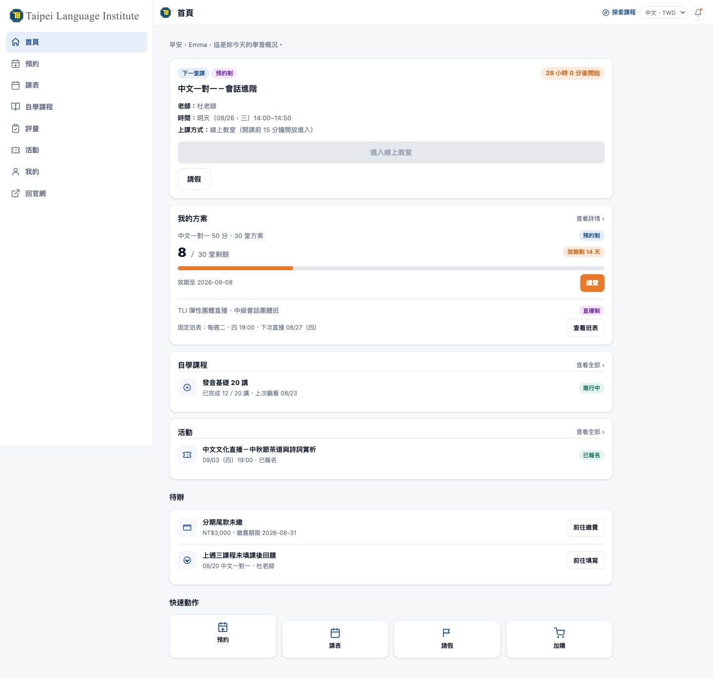
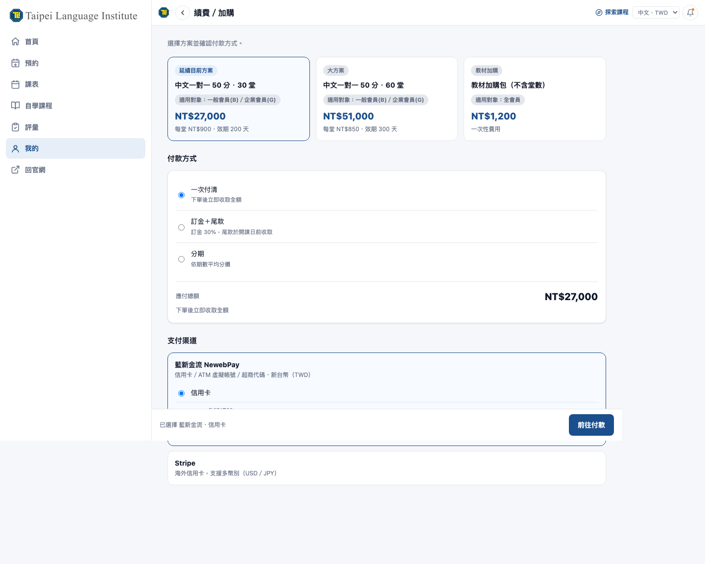
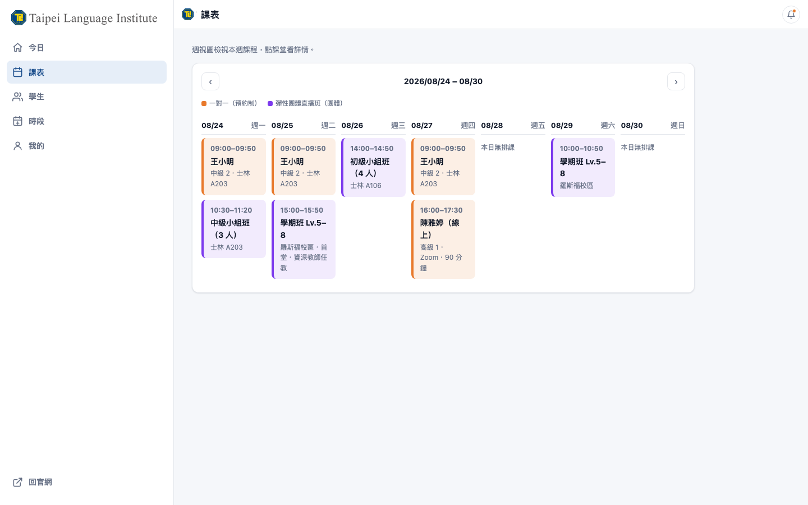
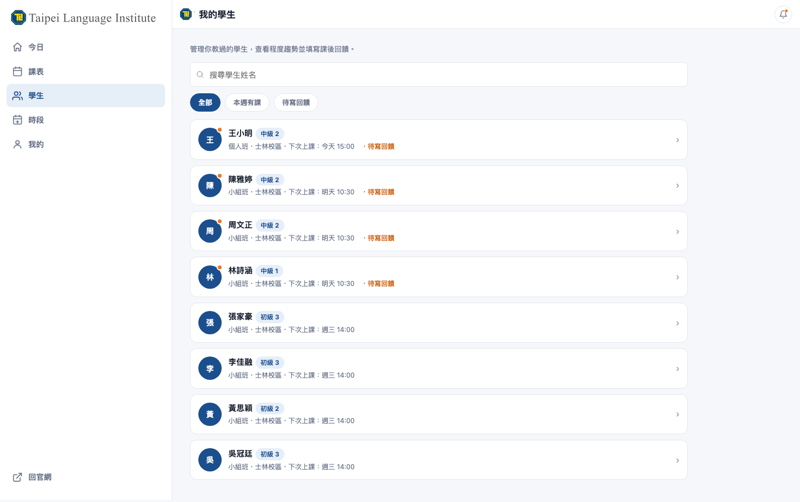
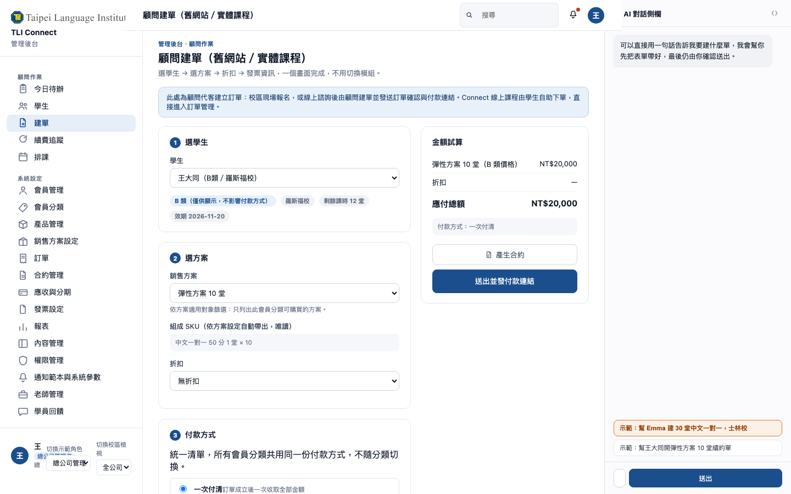
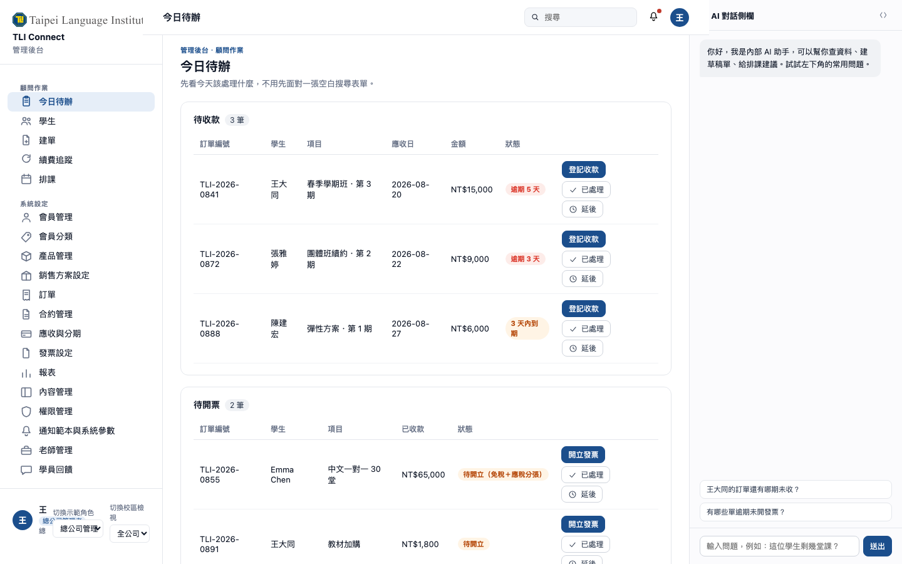
| 模組 | 範圍 |
|---|---|
| 會員管理（`a01`）／會員分類（`a11`） | 會員管理是大量資料作業畫面（搜尋、篩選 chips、排序、分頁、批次操作、匯出、右側詳情抽屜）；會員分類是小型設定清單（代碼、名稱、說明、會員數、啟用），分類只是屬性，用途為計價對象、報表與篩選，不設定付款模式 |
| 產品管理（`a02`／`a03`） | 產品線、產品系統、課程（底層產品）三層主檔，含產品線／產品系統節點本身的設定畫面；課程屬性含名稱、所屬層級、上課方式、單位、時長、收費類目、稅別、教材冊別、狀態。不放定價、折扣、上下架 |
| 銷售方案設定（`a04`） | 方案（挑課程＋定價＋適用對象＋折扣＋期間渠道＋上下架，繼承課程的上課方式）與組合包；B／G 合約價的作法為方案標「顧問報價」並限渠道為顧問建訂單 |
| 班表與可預約時段設定 | 直播制（彈性團體直播、文化主題線上課）的班別與固定班表維護；預約制（一對一線上課）的可預約時段維護；一階段由行政人員在後台維護，二階段接上排課引擎後自動產生 |
| 訂單、金流、發票（`a05`／`a06`） 1-2 | 訂單狀態機、新增訂單（後台建訂單流程）、批次匯入、付款方式統一清單維護、金流渠道（藍新 6 商店、Stripe、四校刷卡機 6 台、匯款現金）、Ezpay 開立與免稅應稅分張、開票主體 CRUD 與金流設定、收款紀錄與發票的新增／修改／作廢／折讓／補開與稽核紀錄、課時與權益入帳；畫面於 1-1 完成，1-2 正式上線並切換結帳 |
| 合約管理（`a12`）／應收與分期沖銷（`a13`） | 合約列表、線上簽署與時間戳、範本編輯；應收 KPI、應收列表、分期期程表、登記收款自動沖銷、催收、金流對帳；一階段完成畫面與基本邏輯，正式啟用時點待客戶確認（第七節第 26 項），畫面呈現為可操作的正式介面 |
| 學員回饋（`a14`） | 篩選（校區／老師／課程／星等／狀態）、低分自動待處理、指派顧問跟進、聯繫學生、標記老師輔導、老師評分總覽 |
| 內容管理（`a08`）／活動管理（`a16`） | 公開網站頁面與區塊、FAQ、師資與校區資料、多語內容、SEO 設定；活動管理新增為獨立頁面，含活動建立、報名名單檢視與匯出，供 `p09`／`m10` 使用 |
| 權限管理（`a09`）／通知範本與系統參數（`a15`）／報表（`a07`）／老師管理（`a10`） | 權限管理：帳號與人員、角色管理與功能權限矩陣（五種角色 × 查看／新增／編輯／刪除／匯出）、資料範圍、登入與操作紀錄；通知範本與系統參數：多語範本、金鑰、幣別匯率、線上教室（Zoom）設定；3 張核心報表；老師主檔與授課紀錄查詢 |
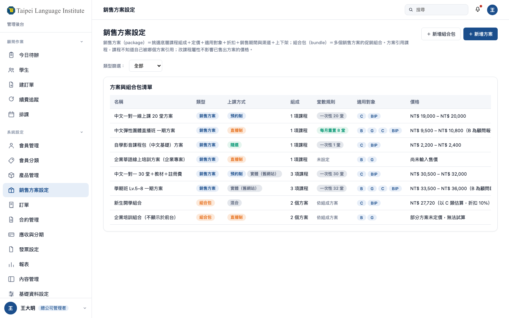
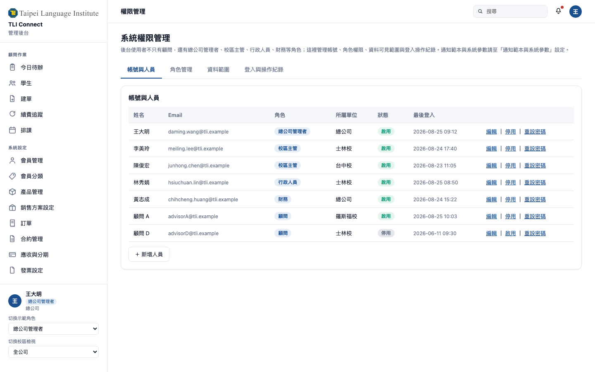
| 工具 | 能力 |
|---|---|
| 學生查詢工具 | 查基本資料、會員分類、課時餘額、上課紀錄 |
| 訂單工具 | 建訂單草稿、查訂單與收款狀態、產生付款連結 |
| 產品與方案工具 | 查課程與方案內容、依登入者分類列出可購方案與價格 |
| Park 讀取工具 | 查詢學生主檔與課表（唯讀）；排課配對引擎與排課寫入移至二階段 |
| 客服工單工具 | 查工單、查常見問題、寫回覆草稿（1-1 上線的 AI＋真人文字客服平台，直接取代 Zendesk） |
| 報表查詢工具 | 以自然語言取得日報與產品日表數字 |
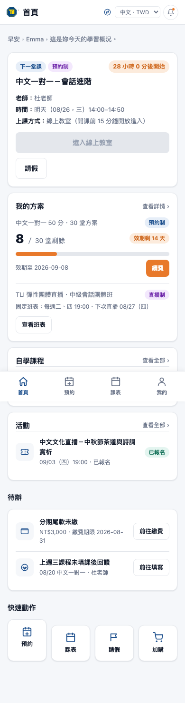
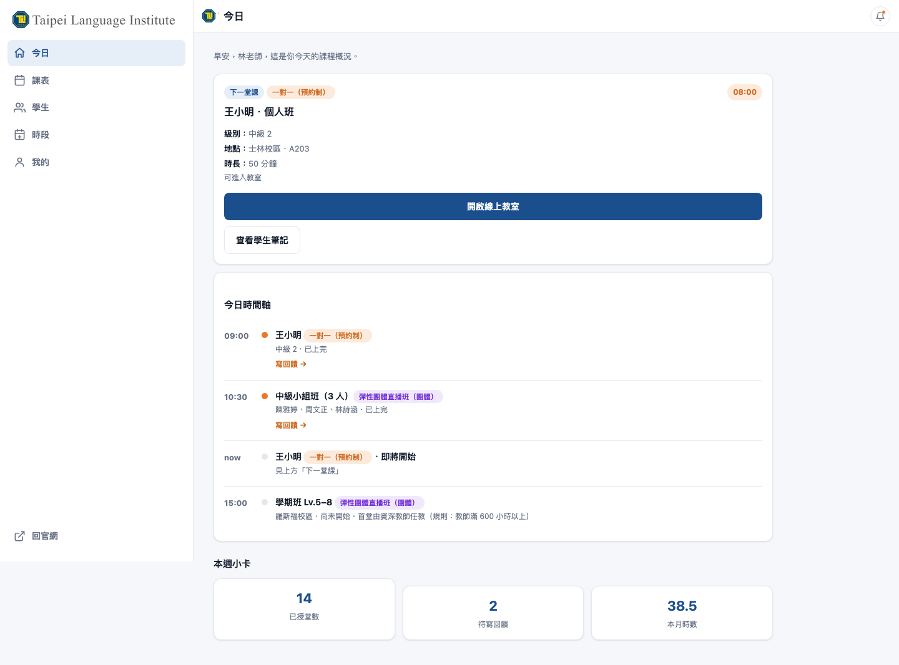
| Kolable 資料取得 | 以合約與個資法途徑為主——TLI 為資料所有者、Kolable 為受託處理者，合約終止時 TLI 有權要求以結構化格式交付全量資料；同時備援後台既有匯出功能與依報表清單逐批撈取，三條路並行，不押單一途徑。 |
| 只移未結案訂單 | 遷移範圍限定未使用完的權益、未到期方案、未收款的餘額與分期，以及對應會員主檔；已結案訂單僅匯出封存，不進新庫。把遷移工作量從全量歷史訂單大幅縮到活躍集合；已結案訂單封存匯出改由新達提供匯出腳本與格式說明，檔案保存與查詢由 TLI 自行處理。 |
| 切換日設計（1-1／1-2 兩波） | 1-1（第 1–4 個月）先上線公開網站、學生會員區、教師端基本版、後台核心與顧問作業區，但不切換結帳——現場校區人員的收款與開票作業維持不變，仍在 Kolable 完成；1-2（第 5–6 個月）訂單結帳金流發票模組正式上線即切換結帳，當日起所有新訂單走 3.0，同時進行 Kolable 資料遷移與教育訓練，Kolable 轉為唯讀維持到最後一筆權益到期或第 6 個月止（取較早者），第 6 個月底服務終止，學生的瀏覽、購買、預約與自學入口同步全面轉移，1.0 前台同日關閉。 |
| Park DB 直讀介接 | 一階段不修改 Park 程式，經標準化接口往來，兩套系統不直接相連；本階段啟用三支唯讀接口（學生資料、課程資料、訂單資料），排課讀寫與時數接口留給二階段。 |
| 保留（重新設計後併入 3.0） | 保留理由 |
|---|---|
| 課時餘額、可用範圍與到期日 | 排課、請假、退費的計算基礎；改由 3.0 訂單直接產生，不再是獨立餘額系統 |
| 排課與教師指派 | 核心教務作業；依客戶 50 條規格重寫，支援個人班、學期班、小組班三種 |
| 教師開放時間與例外日期 | 排課前置資料；現況靠 Line 與辦公室口頭協調 |
| 課後教學紀錄與學生評分 | 老師交接與品質管理依據；分為學生可見與內部觀察兩層 |
| 教師時數統計與薪資試算 | 現況每月人工彙整；新版做到可核薪 |
| 教材授權與電子書閱讀器 | 學生訪談中唯一被稱讚的功能 |
| 學生與教師課表輸出 | 現況以列印 PDF 寄送，新版改為入口自助查閱並保留匯出 |
| 教室與資源管理 | 四校實體排課的必要條件 |
| 學生證書查詢與下載 | 完課證明是招生與續費的誘因，Park 已有此功能 |
| 捨棄（不照搬） | 捨棄理由 |
|---|---|
| 會員餘額儲值、提領、凍結 | 等同電子錢包，帶來金流與稅務責任；改以訂單與應收處理 |
| 帳戶綁定與推薦分潤 | 對應舊平台的分潤設計，現行業務沒有此模式 |
| 位元旗標式狀態（bitmask）、LearnAction 數值判定 | 同一筆資料可同時具備多個狀態位元，查詢與稽核困難；改為結構化欄位與單一狀態 |
| 教師輪替硬規則 | 規則寫死在程式，四校實務不同；改為配對排序的可調參數 |
| 5 組固定 Email＋共用明文密碼的臨時教室帳號機制 | 安全風險已在 Park 文件中明載，新版線上教室不得沿用共享帳密設計 |
| 成就與遊戲化模組 | 無營運需求 |
| 客訴中心與常見問題（含 7 天自動結案排程） | 由一階段的 AI＋真人文字客服平台承接，不重複建置 |
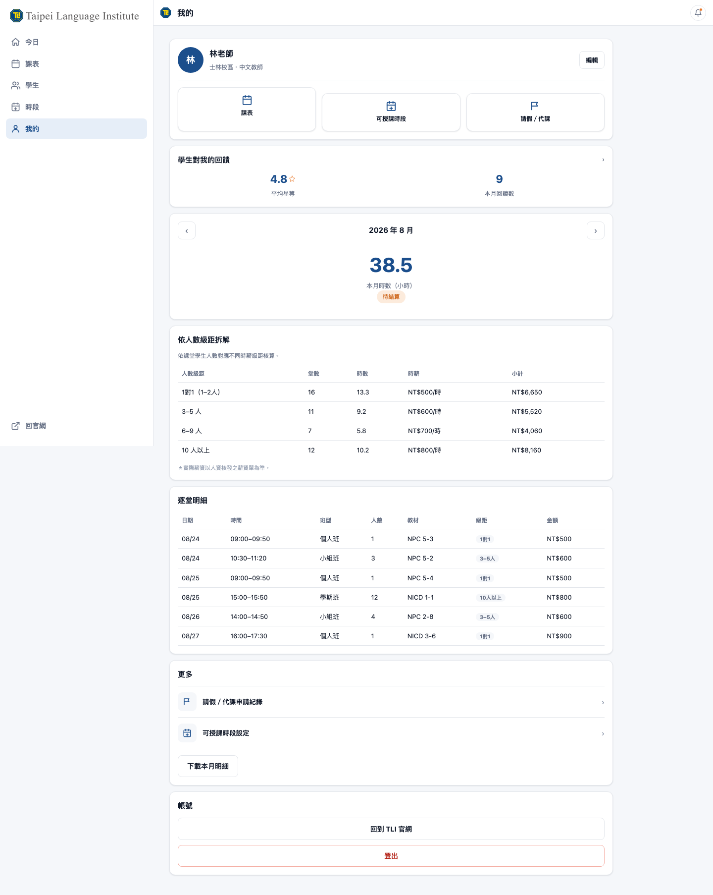
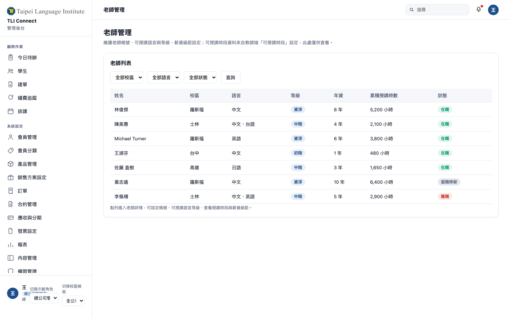
| 模組群 | 決策 |
|---|---|
| 公開網站（9 頁）：首頁、課程目錄、課程詳情、師資、校區、FAQ、試聽諮詢申請、登入註冊、活動；只上架線上課程，實體課程導向舊官網 | 一階段 |
| 品牌官網 tli1956.com 的整併、媒體文章 blog | 二階段／不做 |
| 會員管理（`a01`）與會員分類（`a11`，分類為屬性）、自訂欄位、批次匯入精靈、權限與校區歸屬 | 一階段 |
| ～會員分類連動付款模式（B／G 五種、C／BIP 三種）～ | 作廢 |
| 聯絡管理（CRM）、待辦與工單分類 | 一階段 |
| 企業組織母子帳號與席次 | 二階段 |
| 追蹤系統、新手引導模組 | 不做 |
| 產品管理：產品線／產品系統／課程（底層產品）三層主檔（含上課方式屬性）、收費類目與稅別 | 一階段 |
| ～產品詳情內的定價矩陣、折扣、上下架分頁～ | 作廢 |
| 銷售方案設定：方案（定價、適用對象、折扣、期間渠道、上下架）、組合包、兌換方案、會員卡權益、預購專案 | 一階段 |
| 募資專案、贈品方案、作品專案與角色管理、商品／兌換／文章分類 | 不做 |
| 訂單管理（兩種來源：Connect 自助下單／顧問建訂單）、付款方式統一清單、藍新金流、四校刷卡機、Stripe、現金應收 | 一階段 |
| ～分期與月結依會員分類連動（B／G 五種、C／BIP 三種）～ | 作廢 |
| 發票（Ezpay、免稅應稅分張）、開票主體、合約管理、應收與分期沖銷（畫面）、購物車結帳 | 一階段 |
| 應收與分期沖銷的自動沖銷、催收、金流對帳等進階功能正式啟用 | 二階段 |
| 線上教室與 Zoom 安全（六項機制）、學生會員區（App 式，10 頁）、教師端基本版（App 式，6 頁）、管理後台・顧問作業區（7 頁）、管理後台・系統設定（16 頁） | 一階段 |
| ～顧問工作台（獨立前台）～ | 作廢（已併入管理後台） |
| 通知範本與系統參數、營運報表（3 張核心）、多語系（中英）多幣別時區 | 一階段 |
| 簡訊、站內信、臨時密碼 | 不做 |
| AI 諮詢助手、AI 內部助手、工具層（標準化工具介接）、N8N 自動化（6 條）、AI＋真人文字客服平台（直接取代 Zendesk，全渠道） | 一階段 |
| 客服平台擴充（知識庫深化、AI 回答品質調校）、CDP 與自動化旅程 | 二階段 |
| 排課引擎（三種上課方式、三班型）、課時到期日規則、開放時間設定、請假補課代課批次異動、課後教學紀錄與學生回饋、老師時數統計與薪資級距 | 二階段 |
| 教師端整併 Park 老師需求（補齊時數與薪資頁、既有流程遷移，成完整 7 頁）、學生入口教務分頁（併入會員區）、管理後台・顧問排課作業（`c07`） | 二階段 |
| 教材與電子書、教室與資源管理、舊官網 tli1956.com 實體課程整併 | 二階段 |
| 老師接受／拒絕排課、課時展延轉換、多人帳號分課時 | 二階段・待確認 |
| 試聽申請與程度測驗 | 一階段（名單）＋二階段（排課） |
| 會員餘額儲值提領凍結、帳戶綁定、成就遊戲化、客訴中心 | 不做 |
| Kolable 資料取得、只移未結案訂單、既有產品資料對映三層、Park DB 直讀介接 | 一階段 |
| 四校 Ragic 與 Google Sheets 收斂、Park 退場 | 二階段 |
| 工作線 | M1 | M2 | M3 | M4 | M5 | M6 | M7 | M8 | M9 | M10 | M11 | M12 | M13 | M14 |
|---|---|---|---|---|---|---|---|---|---|---|---|---|---|---|
| 盤點與需求定義 | ● | ○ | ||||||||||||
| 1-1：後台核心與顧問作業區（會員／產品／方案／權限，不含結帳上線） | ● | ● | ● | |||||||||||
| 1-1：Connect 線上前台（公開網站＋會員區＋教師端基本版） | ● | ● | ○ | |||||||||||
| 1-1：線上教室與 Zoom 安全 | ● | ● | ○ | |||||||||||
| 資料遷移（Kolable 取得與未結案訂單轉入） | ● | ● | ● | ● | ||||||||||
| 1-2：訂單結帳金流發票模組上線並切換結帳、Kolable 遷移切換、教育訓練、Kolable 停用 | ● | ● | ||||||||||||
| 同步導入線：N8N 自動化 | ● | ● | ○ | ○ | ○ | |||||||||
| 同步導入線：AI 諮詢助手＋AI 內部助手＋工具層 | ● | ● | ● | ○ | ○ | |||||||||
| 同步導入線：AI＋真人文字客服平台（直接取代 Zendesk，不經過渡期） | ● | ● | ● | ● | ○ | |||||||||
| 二階段：排課引擎與請假補課 | ● | ● | ● | ● | ● | ○ | ||||||||
| 二階段：課後紀錄、時數薪資、教師端整併 Park 老師需求 | ● | ● | ● | ● | ○ | |||||||||
| 二階段：舊官網 tli1956.com 實體課程整併 | ● | ● | ● | ○ | ||||||||||
| 二階段：教材電子書、教室資源、合約與應收進階、報表 | ● | ● | ● | ● | ○ | |||||||||
| 二階段：客服平台擴充（多渠道、知識庫深化） | ● | ● | ○ | |||||||||||
| 二階段：CDP 與自動化旅程 | ● | ● | ● | ○ | ||||||||||
| Park 平行運行與退場 | ○ | ● | ● | ● |
| 時點 | 里程碑 | 內容／go／no-go 判準 |
|---|---|---|
| M1 底 | 盤點交付並簽認 | Park 資料庫結構、Kolable 匯出樣本、1.0 使用中功能清單三份文件交付並經 TLI 簽認；Kolable 資料取得途徑是否確定，不確定則先啟動法律途徑，第一波開發照常進行 |
| M2 底 | N8N 首批自動化上線 | 訂單成立寫 Park、諮詢與試聽名單分派兩條流程在正式環境連續運行兩週無人工補救 |
| M3 底 | AI 內部助手與客服平台上線 | 顧問可用對話完成查學生、查方案與建訂單草稿，回答附資料來源；AI＋真人文字客服平台開始建置，Zendesk 仍照常運作；四校顧問實際使用率未達標則先調整作業區流程再往下走 |
| M4 底 | 1-1 完成 | 公開網站、學生會員區、教師端基本版、後台核心（會員／產品／方案／權限）、顧問作業區上線；產品三層主檔與銷售方案設定完成建置並通過 TLI 驗收；五種角色的權限矩陣經 TLI 逐項確認；結帳仍在 Kolable 進行，現場校區人員作業不受影響 |
| M5 底 | 線上教室安全驗收 | 未報名帳號嘗試進入、外部瀏覽器開啟複製網址、逾時連結進入三種情境全部被擋下；出席狀態自動寫回中台且與實際進出時間相符 |
| M5–M6 | 1-2 結帳上線、Kolable 終止 | 訂單結帳金流發票模組正式上線並切換結帳，當月新單 100% 在 3.0；Connect 公開網站上線且 SEO 基礎項全部具備；學生可自助註冊、購課、預約制預約、直播制入班、觀看自學課程；未結案訂單全部遷移完成；Kolable 服務終止並取回全量資料；通過才啟動二階段 |
| M6 底→M7 初 | 客服平台驗收、Zendesk 停用 | 全部渠道（Email、LINE、Web chat、FB、IG）訊息完整落地客服平台、工單不漏接、真人接手轉換無斷點、Zendesk 歷史工單匯出完成；通過後 M7 初停用 Zendesk |
| M11 底 | 排課與時數薪資模組上線並平行運行 | 與 Park 的排課與時數結果差異為零；通過才讓 Park 排課功能下線 |
| M13 底 | 舊官網實體課程整併完成 | 實體產品與方案在 3.0 可建訂單、可開票；tli1956.com 的課程頁導流至 3.0 |
| M14 底 | Park 全部退場 | 四校資料收斂完成、教師端與學生入口使用率達門檻、歷史資料封存完成 |
| # | 項目 | 為什麼要問 | 建議作法 |
|---|---|---|---|
| 1 | Kolable 資料交付方式與時程 | 決定資料遷移的路徑與風險 | 現行合約到期日與終止條款先確認；同時發正式函要求交付，不等口頭承諾 |
| 2 | 開票主體共 7 個，各自名稱、統編、對應校區與產品線 | 發票模組的設定基礎，也影響營收歸屬報表 | 請 TLI 財務提供對照表；在此之前發票模組先以可設定的方式開發，不寫死 |
| 3 | 各開票主體的營收歸屬規則 | 四校銷售報表與營收報表的口徑 | 明確定義依校區、依產品線、或依收款帳戶三者擇一 |
| 4 | B／G 與 C／BIP 的價差規則 | 銷售方案定價與適用對象設定的核心。本次僅找到訂單失效期限差異（C 為 10 天、BIP 為 20 天），查無價格或費率差異數字 | 請 TLI 提供「產品規格表」與「地區性定價申請表」兩份文件 |
| 5 | 排課三階段未定規格共 8 項 | 老師接受與拒絕排課、課時展延、轉換課時、多人帳號分課時、上課證明、老師大表、教室大表、試聽預約，均只有流程節點無規格 | 依第四節 4.6 的建議作法逐項確認，由新達出草案供 TLI 圈選 |
| 6 | 課前 48 小時請假扣課時的門檻定義 | 只出現在通知文案，與請假三情境的銜接關係未定義 | 確認是第四種情境，或是正常請假情境內的細部判斷 |
| 7 | 士林校與台中校提出但被定稿拿掉的配對因子 | 資深與新手老師搭配、授課週時數與授課率兩項現場因子未進入最終排序公式 | 建議補回，作為排序權重的可調參數，由各校自行設定 |
| 8 | 月曆視圖與時段拖拉開關 | 士林校要月課表與拖拉開關時段，定稿規格是週曆且無拖拉 | 建議補回月檢視（只讀），拖拉開關列為二階段第二波 |
| 9 | 四校資料遷移範圍 | 羅斯福校用 Ragic，士林、台中、高雄各自用 Google Sheets，四份資料的欄位與品質不一致 | 確認要遷移的年份區間與必要欄位；歷史資料保留匯出封存即可 |
| 10 | 訂單狀態機的中間態 | 舊系統文件的訂單狀態列舉沒有退貨中與退款中，但業務描述中出現這兩種狀態 | 確認實際作業是否需要這兩個中間態 |
| 11 | 學生會員區與教師端要不要做原生 App | 學生訪談顯示現有 App 存在感低，有學員完全不知道有 App | 建議先做 App 式網頁，使用率達標後再評估原生 App，另行報價 |
| 12 | 日文介面是否納入一階段 | 客戶 2.0 規劃的多語系只含中英，一階段配置為容納客服平台已縮為中英雙語 | 確認日籍學員占比是否足以支撐加購日文，否則維持二階段 |
| 13 | 六種薪資制度的名稱與級距數值 | 中師與外師 × 內課、外課、海外的鐘點費矩陣，制度名稱固定不可新增 | 請人資提供現行級距表，作為薪資模組的驗收案例 |
| 14 | 平行運行期的長度 | 影響二階段的收尾月份與上線支援投入 | 建議至少一個完整計薪週期；若 TLI 要求兩個週期，上線支援投入需增加 |
| 15 | 師資班認證業務現況與是否納入二階段 | Park 有完整報名審核、排班、考試證書機制，底稿未涵蓋 | 先問現況；本版範圍配置未含此模組，若確認需要另計工作量與金額 |
| 16 | 是否需要支付寶／微信支付通道 | Park 前台原有此功能，底稿金流模組未提 | 確認是否有陸生、僑生或海外付款需求 |
| 17 | 銷售方案定價是否需要依校區維度 | Park 業務規則明講依國家／學校訂價，底稿只到依地區 | 確認四校之間是否有價差需求 |
| 18 | 教師「文化特性」配對偏好是否仍為現行需求 | Park 排課可切換此偏好，可能是純線上時代的過時設計 | 確認後決定排課引擎配對公式是否要加這個因子 |
| 19 | 第三方登入要支援哪幾種 | 公開網站有註冊入口後，第三方登入直接影響轉換率 | 建議 Google 必做、日本市場加 LINE、歐美學員加 Apple；請 TLI 確認是否還要 Facebook 或微信 |
| 20 | 是否合併 tli1956.com 品牌官網，或兩站並存互連 | 公開網站與品牌官網內容有重疊，兩站並存會造成兩份內容要維護、SEO 權重分散 | 建議二階段只整併實體課程的產品、方案、建訂單與開票；若要求整站合併，內容搬遷需另估 |
| 21 | ~~教師端是否提前到一階段上線~~ | 已定案（2026-08-26）。主管原話：「一階段就會有教師介面，只是之後會把舊的 TLI Park 的相關老師操作需求再整併進來」 | 一階段（1-1）上線教師端基本版六頁，12 人天；二階段整併老師時數薪資與 Park 既有教師流程，補齊為完整七頁，詳見第三節 3.3、第四節 4.3 |
| 22 | 課程主檔由誰維護，既有 Kolable／Park 產品資料如何對映三層 | 三層結構是全案的骨幹，主檔品質直接決定定價、發票分張與報表正確性 | 建議教務主責課程屬性、財會主責收費類目與稅別、業務主責產品線與產品系統歸屬；對映表由新達提供草案，TLI 逐筆確認 |
| 23 | 付款方式統一清單的正式選項有哪些 | 選項一旦上線就進訂單與發票流程，事後新增要動狀態機 | 請 TLI 財會確認四種是否涵蓋所有實際在用的方式；同時確認每種對應的收款登錄與開票時點 |
| 24 | FAQ 知識庫由誰維護 | 公開網站常見問題頁與 AI 諮詢助手、線上諮詢按鈕共用同一份知識庫，內容準確度直接影響 AI 回答品質 | 建議由教務與業務共同維護內容、客服窗口負責上稿與定期盤點 |
| 25 | AI 回答的免責與人工接手規則 | AI 諮詢助手與 FAQ 問答直接面對訪客，答錯或答不出的處理方式影響招生體驗與法遵風險 | 建議畫面明示「AI 回答僅供參考，正式報名以顧問確認為準」；設定信心分數門檻 |
| 26 | 應收與分期沖銷的正式啟用時點 | 畫面與資料模型 1-1 已完成，是否於 1-2 結帳上線時同步開放給顧問操作 | 建議切換日先開放查詢與登記收款，自動沖銷與催收功能於上線後一個月觀察資料穩定再開啟 |
| 27 | 付款方式是否再精簡為 3 種 | 目前四種為客戶兩份表單 8 種去重合併的結果，主管質疑選項是否過多 | 建議看過原型的建訂單與續費結帳流程後再決定；若要精簡，優先合併「訂金＋尾款」與「分期」 |
| 28 | 合約線上簽署供應商 | 線上簽署與時間戳保存需第三方電子簽章服務，尚未選定供應商，影響串接工作量與月費 | 建議由 TLI 提供現有配合廠商，或授權新達提案 2–3 家比較；月費列入目標價外項目 |
| 29 | 藍新 6 商店與校區／品牌對應清單 | 金流設定需要商店代碼與校區、產品線的對應表，目前資料未提供 | 請 TLI 財會或現行金流窗口提供對應表，開發前確認，避免上線後收款入錯帳戶 |
| 30 | Stripe 帳號歸屬 | 海外收款的 Stripe 帳號是否為 TLI 集團統一帳號、或各校各自申請，影響幣別結算與對帳設計 | 建議統一帳號、以幣別與備註欄位區分校區來源以簡化對帳 |
| 31 | 彈性制 彈性團體直播 的班表規則 | 直播制的班表決定會員區課表、後台班表維護與二階段排課引擎的做法；一期幾週、成班人數、跨班選課等規則未定 | 請 TLI 教務提供現行 彈性團體直播 實際運作方式（含一份實際班表範例）；在此之前後台班表設定以可調參數開發 |
| 32 | Zoom 帳號方案與併發會議數 | 一階段線上教室安全需要 Zoom 的 API 與併發會議額度，方案等級直接影響月費與同時段可開課數 | Zoom 授權數＝尖峰同時上課堂數；老師需與學生在同一組織下擁有帳號；學生需以會員區同一 Email 註冊 Zoom（免費）。請 TLI 提供尖峰時段實際同時上課堂數以核算授權數；授權費列在目標價外 |
| 33 | 舊官網 tli1956.com 的整併時點與範圍 | 二階段要把實體課程整併進 3.0，需先確定整併的是「課程與交易」還是「連品牌內容一起搬」，工作量差距大 | 建議二階段只整併實體課程的產品、方案、建訂單與開票；若要求整站合併，內容搬遷需另估 |
| 34 | 實體產品的顧問建訂單流程細節 | 顧問建訂單要處理實體課程，需確認校區現場與線上諮詢是否走同一流程、刷卡機登記與訂單勾稽時點等 | 請四校行政各提供一份現行的現場報名到收款實際流程；建議統一為同一份建訂單流程，差異用付款方式與收款渠道吸收 |
| 35 | Zendesk 合約終止時點與資料匯出 | 客服平台於 1-1 上線即直接取代 Zendesk，涵蓋全部渠道；實際停用與合約終止仍需搭配 Zendesk 現行合約條款與歷史資料匯出作業 | 請 TLI 提供 Zendesk 現行合約到期日、終止條款與續約費用；新達於 M6 底 go／no-go 通過後 M7 初協助執行歷史工單匯出與停用程序 |
| 36 | 一階段為容納客服平台而讓出的八處範圍是否可接受 | 公開網站、會員區、會員管理、產品與方案、訂單發票、班表設定、資料遷移、專案共通八處各讓出一部分範圍，把客服平台完整涵蓋回一階段 | 請 TLI 逐項確認可接受；其中影響較大的三項為日文介面延後、組合包前台促銷呈現延後、發票折讓與補開一階段以人工登錄處理。若任一項不可延後，需與其他模組範圍交換 |
| 用詞 | 定義與使用時機 |
|---|---|
| 3.0 中台 | 新平台的架構層級稱呼，各前台後台共用同一個中台與同一份資料 |
| 前台／後台 | 前台＝使用者自己操作的介面（公開網站、學生會員區、教師端）；後台＝TLI 內部人員操作的管理後台。分界看「誰在用」，不看「功能複雜度」 |
| Connect（線上品牌） | TLI 的線上業務品牌。一階段的公開網站與會員區只上架線上課程；四校實體課程留在舊官網 tli1956.com，二階段整併。對外不說「Connect 取代官網」，說「Connect 是 TLI 的線上校區」 |
| 一對一線上課 | Connect 的第一主力產品，約占線上核心業務七成，旗下課程多採預約制 |
| 彈性制 彈性團體直播 | Connect 的第二主力產品，團體直播課，固定班表入班，學生依方案在班別間彈性選課。對外統一稱「彈性團體直播」或「彈性制課程」，不另創名稱 |
| 上課方式 | 課程（第三層）的屬性，銷售方案由組成課程帶出、不另設；產品系統（第二層）只定義課程體系，不帶上課方式。三種值：預約制（一對一，學生自選老師與時段，逐堂預約）、直播制（彈性團體直播 等團體直播課，固定班表入班，不逐堂預約）、實體（四校實體課，屬舊官網與二階段範圍）。前台篩選、會員區課表、教師端、排課引擎都依此區分 |
| 訂單來源 | 兩種：Connect 自助下單（線上課程，學生在前台結帳、付款完成直接進訂單管理）與顧問建訂單（舊官網與實體產品、企業專案、議價與分期月結，顧問在後台建訂單並發訂單確認與付款連結）。兩者共用同一份訂單、發票與課時權益入帳邏輯 |
| 線上教室安全 | 六項機制的統稱：每堂唯一會議、註冊制個人連結＋Email 相符驗證＋一次性 60 秒 token 進入、等候室名單比對與鎖會議、會議密碼、連結有效時間、出席自動寫回。對外強調「學生看不到連結、也轉不出去」，不講技術細節 |
| 公開網站 | 未登入即可瀏覽的網站，含首頁、課程目錄、課程詳情、師資、校區、活動、FAQ、試聽諮詢表單、登入註冊 |
| 學生會員區 | 登入後的 App 式介面，底部四分頁，只處理預約上課、看自己的課、續費加購三件事 |
| 教師端 | 老師自己使用的 App 式前台，7 頁：今日、我的課表、課後紀錄與回饋、可授課時段、請假與代課、時數與薪資、我的學生。一階段（1-1）先上線基本版六頁，二階段整併 Park 老師需求補上時數與薪資頁成為完整版 |
| 顧問作業區 | 管理後台中供顧問處理日常業務的一區：待辦、建訂單、學生 360、訂單、續費追蹤、排課作業；原稱「顧問工作台」，2026-08-25 起改稱並定位為管理後台的一區，不是獨立前台 |
| 會員管理／會員分類 | 系統設定下兩個獨立模組：會員管理是大量資料作業畫面（搜尋、篩選、排序、分頁、批次、右側詳情抽屜，`a01`）；會員分類是小型設定清單（代碼、名稱、說明、會員數、啟用，`a11`）。分類是會員管理列表可篩選的其中一個欄位，不是同一頁 |
| 會員分類（B／G／C／BIP） | 會員的一個屬性欄位，可擴充，用途為計價對象、報表與篩選；對外說明時講「不同客戶類型看得到不同的銷售方案」，不逐一解釋代號含義。不連動付款方式 |
| 產品線／產品系統／課程（底層產品） | 產品三層結構。產品線共 5 條：Connect（線上）／中文／外文／師資班／方言；Connect（線上）下的產品系統為一對一線上課、彈性團體直播、自學影音、文化主題線上課、企業線上培訓、線上師資認證，其餘四條為實體產品線、二階段整併；課程（底層產品）＝可交易的最小單位，帶收費類目與稅別，上課方式也是課程層的屬性 |
| 銷售方案設定 | 管理後台中設定方案與組合包的模組，與產品管理分開：產品管理只管三層主檔與課程屬性，不放定價、折扣、上下架 |
| 銷售方案（package） | 由多個課程（底層產品）組成的可銷售單位，帶定價、適用對象、折扣、銷售期間與渠道、上下架 |
| 組合包（bundle） | 多個銷售方案的促銷組合，同樣有適用對象與折扣，可設定不顯示於公開網站作為企業特殊方案；前一版稱「促銷組合」 |
| 適用對象 | 銷售方案上勾選的可購買會員分類。前台只顯示登入者可買的方案，不是同一方案依分類切價格表 |
| 付款方式 | 建訂單與結帳時獨立選擇的一份統一清單（一次付清／訂金＋尾款／分期／月結，4 種），不隨會員分類切換；不再使用「付款模式」一詞，也不再講「五種／三種」 |
| 收款渠道 | 建訂單與結帳時另一層的選擇，示意四種：藍新金流（6 商店）、Stripe（海外多幣別）、四校刷卡機 6 台（現場登記）、匯款現金；與付款方式各自獨立，不互相連動 |
| 一階段／二階段 | 一階段＝重構 Connect 3.0 取代 Kolable；二階段＝整併舊教務系統與舊官網。取代現行藍圖的三階段講法 |
| AI 內部助手（唯一對話入口） | 顧問以問答方式查資料與做事的入口，先限內部使用 |
| AI 諮詢助手 | 公開網站試聽與諮詢申請頁的問答式入口：問 3–4 題建議班型與方案並帶入表單，含 2 分鐘程度快測。與常見問題頁的 AI 問答、全站「線上諮詢」按鈕共用同一套對話 AI 與工具層，是「AI＋真人文字客服平台」的前台入口，不是另一套 AI |
| 工具層（標準化工具介接） | AI 助手的能力來源；對客戶技術人員才講 MCP，一般場合講標準化工具介接。配套句：之後要加功能等於加一顆工具 |
| N8N（流程自動化）／N8N 自動化 | 固定用本名，不稱自動化工具或 RPA |
| AI＋真人文字客服平台 | 全渠道整合、AI 第一線、轉真人、回覆送回原渠道。不稱智能客服或 AI 客服系統。一階段（1-1）上線即直接取代 Zendesk，涵蓋 Email、LINE、Web chat、FB、IG 全部渠道，不經過渡期；二階段擴充知識庫深化與 AI 回答品質調校 |
| 取代線／同步導入線 | 兩條主線的固定命名 |
| 標準化接口／接口 | 指 API 層，固定用接口 |
| Zendesk 現況邊界 | 固定說法：各渠道已整合至 Zendesk，僅承接諮詢、無法接單；一階段（1-1）由 AI＋真人文字客服平台直接取代，驗收通過後停用 |
| 教務課務模組 | 二階段整併範圍的統稱，涵蓋排課、請假補課、課後紀錄、時數薪資、教師端整併 Park 老師需求（基本版已於一階段先行）與學生入口教務分頁 |
| 舊教務系統 | 對外指稱 TLI Park 的中性說法，避免在簡報中反覆出現內部系統代號 |
| 平行運行期 | 新舊系統同時運作、以結果比對驗證的期間，是 Park 退場的前提 |
| 1-1／1-2 | 一階段（第 1–6 個月）內部拆分的兩波：1-1（第 1–4 個月）完成公開網站、學生會員區、教師端基本版、後台核心、顧問作業區、AI 客服直接取代 Zendesk、AI 內部助手＋N8N、線上教室安全，現場校區人員的結帳作業維持不變、仍在 Kolable 完成；1-2（第 5–6 個月）訂單結帳金流發票模組正式上線並切換結帳、Kolable 資料遷移與切換、教育訓練、Kolable 停用。切換日＝1-2 期間新單全面走 3.0、Kolable 轉唯讀的日期 |